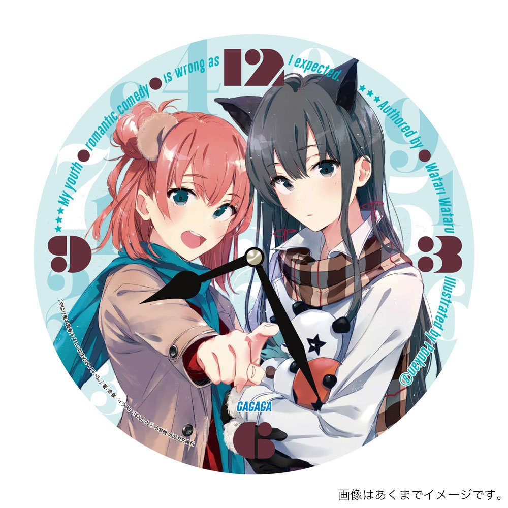
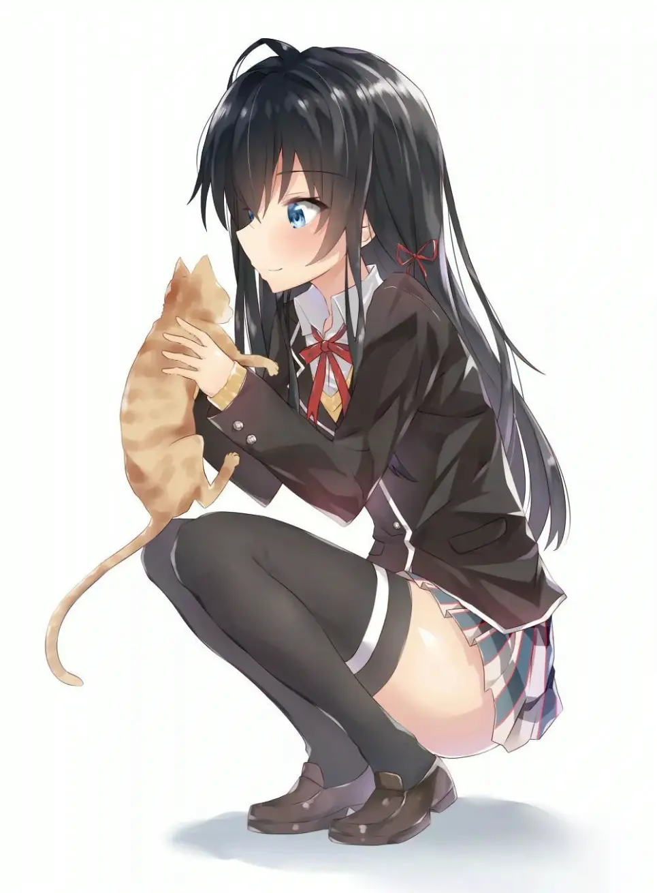
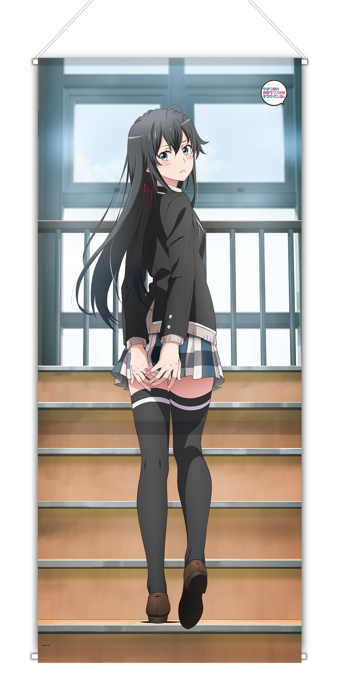
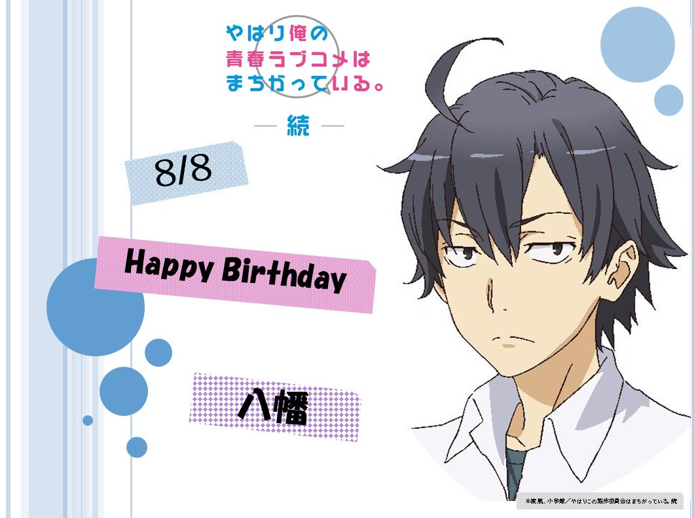

大老师经典语录摘录
吃不到的葡萄，一定是酸的。 但是，我并不需要什么如同谎言一样甘甜的果实。充斥着虚妄的理解和欺瞒的关系，我并不需要。 我想要的，就是那酸味的葡萄。 就算满是酸涩，就算苦似黄连，就算味同嚼蜡，就算苛毒无比，就算如同空中楼阁，就算只是镜花水月，就算仅仅是期待也不被允许。
温柔正确的人总是难以生存，因为这世界既不温柔，也不正确。
努力是不会背叛自己的，虽然梦想会背叛。努力不一定能实现梦想，但是曾经努力过的事实却足以安慰自己。
“人”字经常被解释为人和人互相支持，但写起来不是往一边倒么 ？ 我觉得容忍他人的牺牲才是“人”这个概念。
独行侠是以孤傲真正地确立自我。

孤高所以至高，所谓真正的英雄就是一个人。因为孤高所以强大。没有持有羁绊也就是说没有必须守护的东西。必需守护的东西换言之就是弱点。就是因为有弱点才会失败。因此没有弱点，没有必须守护的东西，和别人没有联系的人才是最强的。
孤独者像永世中立国一般。在那里不会因不存在的东西引起风波，也不会被卷入纠纷。世界如果全是孤独者的话就绝对不会有战争和歧视。
真正的强者才不会群居的。孤独者永远都是和这个世界的全部相对立的。只有弱者才喜欢扎堆，问题是绝大部分人都是弱者。
人类的成长即是如此无可奈何的事情。附上创伤、遭到贬低、受完侮蔑后才第一次得到成长。爱和友情和勇气可改变不了一个人。
面壁是青春不可少的存在。
人们被搭话时会感到高兴，最大的理由在于自我认同的欲求获得满足。他们借此确定对方认同自己这个人、接受自己存在于这个世界、确定自己拥有让对方前来搭话的价值，并且为此感到高兴。反过来说，我们能够自我认同的话，便不需要上游的确认过程。
孤独的人不会伤害别人，只会不断地伤害自己罢了。
这世上真正的好人和坏人都很少，大部分都是普通人。平时随波逐流，关键时刻则会出于自我保护而露出獠牙——然而正是因为这样才可怕。

人心的距离是被实际的距离所具象化表现的事物。
“世界无法改变，自己可以改变”这种说法，不过是对这个混账垃圾一样，冷淡又残酷的世界的顺应、适应、承认自己失败的隶属行为而已。这不过是动用着华丽的辞藻装饰的，连自己都骗个昏头转向的欺瞒而已。
大家互相帮助，一起成功，一起幸福什么的，不过是种理想。现实中，有人幸福，就必定有人被抛弃。有人光鲜，就必须有人满身泥泞。
谄媚时舍弃尊严全力谄媚，这就是我的尊严。
人类，本质上并没有那么容易改变。我们只是通过训练，把那样的情感压抑住罢了。
如果怀抱着人际关系的苦恼的话，将那人际关系本身破坏就不会再有苦恼了，负的连锁也会从根源切断，这样就够了。‘不能逃避’什么的只是强者的思考方式。强求这种事情的世界才是有问题的。‘我没有错，错的是世界’什么的虽然听上去像是借口，但这本身就错了。错的总是自己什么的，才不会有这种事情。社会也好，世间也好，周围也好，不论是谁都经常会出错。如果没人肯定的话，我来肯定。
如果随便说句话就能解决烦恼的话，就没有烦恼这种东西存在了。
看谁的脸色，讨谁的欢心，保持联络，迎合话题，不得不做那么多才能维系的友情，那种东西根本就不是友情。如果那么繁琐的东西才能被称为青春的话，我根本不需要。靠这种无聊的交流而装做很快乐的行为根本就是自我满足。那根本就是欺瞒，是应该唾弃的邪恶。
让一个人背负所有伤痛，再将那家伙排除掉。‘One For All’，一个人为了大家。这是常干的事情吧。
误解是解不开的。既然‘解’已经得出了，那么问题就到此为止了。再解下去也解不了。

通过语言进行的人际交流只有三成。剩下来的七成就要通过眼睛的活动和细微的动作来收集。眼睛像嘴一样能说话，这种说法就是根据这种无言的交流的重要性中得出的。

所谓的和人好好应对的行为，不过就是欺骗自己，欺骗对方，对方知道自己被骗，自己也被对方所骗，这样的连锁循环而已。说到底也不过是虚伪、猜疑和欺瞒而已。
要让一群人团结起来，需要的不是英明的领导，而是共同的敌人。
如果每个人都堕落，那就没人算是堕落。
我讨厌温柔的女孩子。温柔的女孩子其实对所有人都温柔，我却会误以为只对我温柔，然后就沾沾自喜得意忘形，最后闹得不欢而散，双方都受到伤害。如果说真相是残酷的，那么谎言想必很温柔。所以，温柔只是一种谎言。——所以我才讨厌温柔的女孩子。
